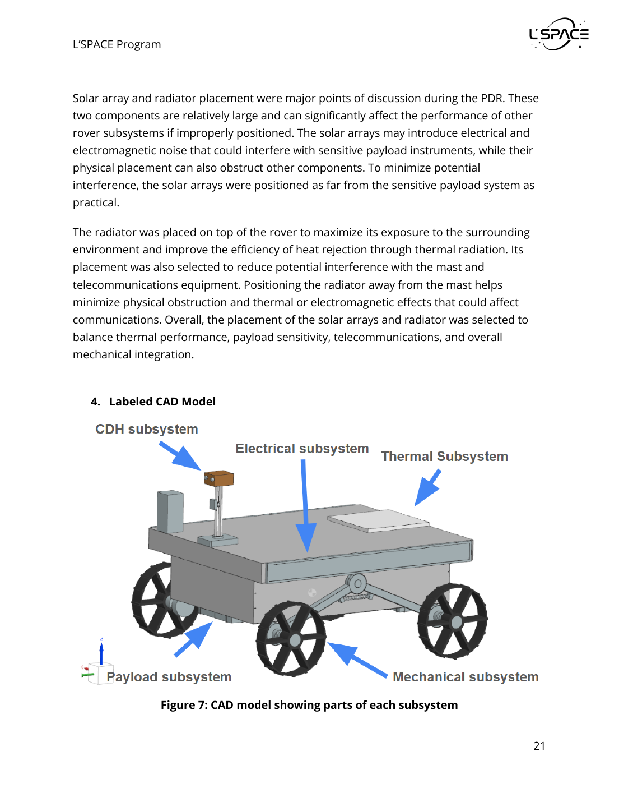
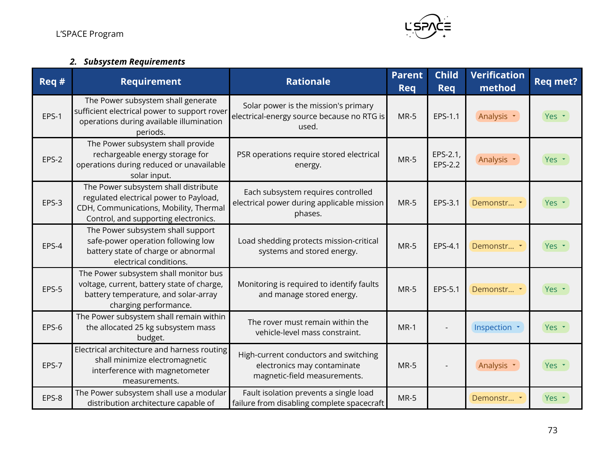
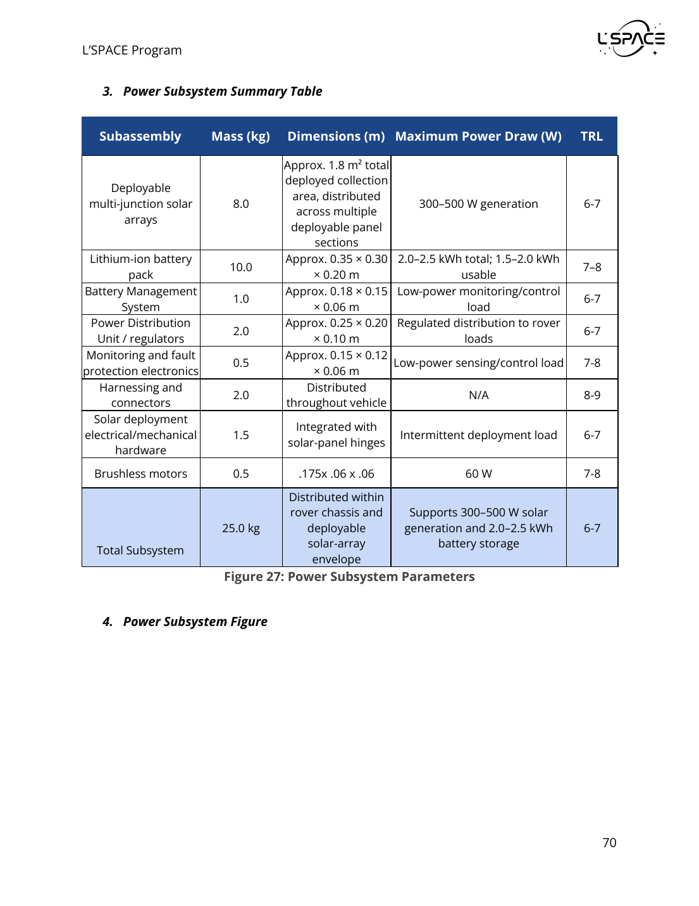

Define what the EPS must do
Generation, storage, distribution, monitoring, safe-power behavior, mass, EMI, and fault isolation.
01 // L’SPACE MISSION CONCEPT ACADEMY
A student mission concept for a lunar south pole rover developed through NASA L’SPACE Mission Concept Academy and carried through Preliminary Design Review. I supported the rover’s electrical power subsystem, translating mission constraints into requirements, architecture, operating modes, and a verification strategy.

TEAM 4 PDR · MISSION OVERVIEW + VEHICLE SUMMARY
Team 4 developed a rover concept for the PNS02 region near the lunar south pole, between Shackleton and Slater craters. The science concept combined investigation of lunar origin and interior evolution with volatile characterization, water-ice measurements, and early-stage in-situ resource utilization feasibility.
TEAM 4 PDR · VEHICLE SUMMARY · PP. 20–21
The rover architecture integrated mechanical, electrical power, command and data handling, thermal, payload, mobility, and communications functions within a constrained vehicle envelope. The preliminary vehicle summary reported a total mass of 153.455 kg and maximum power consumption of 298.91 W.
PRELIMINARY CAD // MAJOR SUBSYSTEM PACKAGING AND INTERFACES
I supported the rover power-subsystem design and PDR documentation. My work focused on converting mission and subsystem needs into electrical requirements and a preliminary architecture that could generate, store, regulate, distribute, monitor, and protect power.
Generation, storage, distribution, monitoring, safe-power behavior, mass, EMI, and fault isolation.
Solar generation, lithium-ion storage, PDU/BMS functions, branch monitoring, and subsystem interfaces.
Analysis, inspection, component tests, environmental checks, and integrated end-to-end validation.
TEAM 4 PDR · POWER SUBSYSTEM · PP. 67–85
Solar generation was the primary energy source, with rechargeable lithium-ion storage supporting operation when solar input was reduced or unavailable. Regulated distribution supplied payload, CDH, communications, mobility, and thermal loads while the monitoring architecture tracked electrical and battery health.
TEAM 4 PDR · POWER REQUIREMENTS · FIG. 29 · P. 72
The PDR formalized requirements for sufficient generation, rechargeable energy storage, regulated subsystem distribution, safe-power and load-shedding behavior, bus and battery monitoring, a power-subsystem mass budget, EMI-aware harnessing, and modular fault isolation.

POWER SUBSYSTEM REQUIREMENTS // TEAM 4 PDR
TEAM 4 PDR · POWER PROFILE · FIG. 28 · P. 70
Electrical demand varies as the rover changes between mobility, science operations, communications, thermal control, charging, and low-energy conditions. Power planning therefore required more than a single peak number: operating modes and load scheduling had to be considered alongside available generation and stored energy.

POWER VS. TIME // OPERATING-MODE DEMAND PROFILE
The preliminary design targeted approximately 300–500 W of solar generation under applicable illuminated conditions while also charging the energy-storage system. Rechargeable storage was necessary for reduced-illumination periods and operations where sunlight could not be relied upon directly.
Generation capacity had to support rover loads while preserving charging margin.
The design called for monitoring bus voltage and current, battery state of charge and temperature, and solar charging behavior. Safe-power and load-shedding functions were intended to preserve critical operation, while modular distribution supported isolation of abnormal or failed branches.
Track electrical health at the bus and protected branches.
Use BMS data to support charging and energy-management decisions.
Reduce noncritical demand and isolate faults when required.
TEAM 4 PDR · VERIFICATION MATRIX · FIG. 31 · P. 85
Verification progresses from analysis and inspection to component, subsystem, and integrated testing. Planned checks cover generation, battery storage, regulation, distribution, monitoring, fault protection, electrical interfaces, environmental performance, and electromagnetic compatibility.
The electrical subsystem could not be designed independently. Payload duty cycles, mobility demand, thermal survival, CDH operation, communications, harness routing, mass allocation, and EMI constraints all influenced the power architecture. Cross-subsystem coordination was therefore part of the electrical design work.
The project established a preliminary mission and subsystem architecture through PDR. Later design phases would still need detailed component sizing, updated integrated budgets, hardware selection, environmental qualification, EMI/EMC validation, and representative hardware testing before the electrical system could be considered implementation-ready.
The team produced a multidisciplinary preliminary design covering the mission concept, vehicle architecture, science traceability, subsystem requirements, interfaces, risk, procurement, schedule, cost, and verification. My contribution centered on the electrical power subsystem and on connecting electrical decisions to the needs of the full rover.